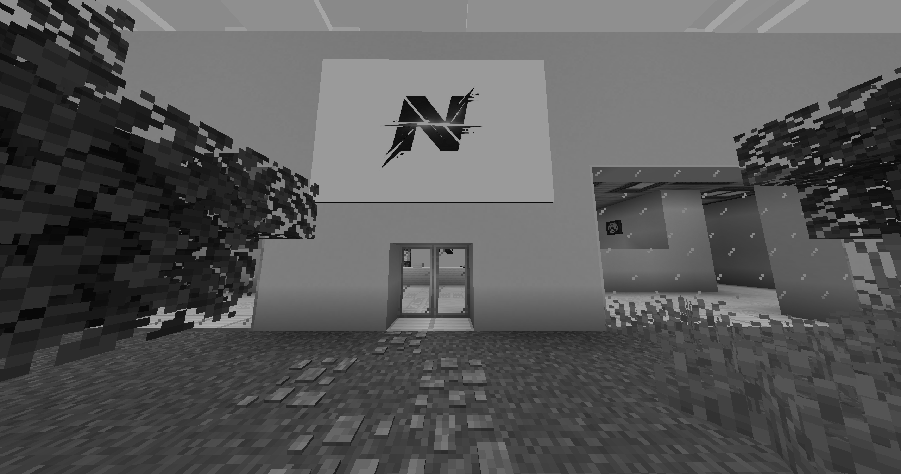

Fundacja Nexus zakonczyla swoja dzialalnosc po serii incydentow, ktorych dokladny przebieg nie zostal ujawniony opinii publicznej. Organizacja, znana z prowadzenia zaawansowanych badan nad nietypowymi materialami i zjawiskami, przez lata pozostawala poza glownym nurtem zainteresowania mediow. Jej projekty byly objete scisla tajemnica, a dostep do informacji miala jedynie waska grupa pracownikow oraz partnerow. Wedlug dostepnych informacji, decyzja o zamknieciu zapadla nagle, bez wczesniejszych sygnalow o problemach wewnetrznych. W ciagu jednej nocy dzialalnosc zostala wstrzymana, a wszelkie systemy wylaczone lub odciete od sieci. Oficjalne komunikaty ograniczaja sie do lakonicznych stwierdzen o „procedurach bezpieczenstwa” oraz „braku zagrozenia dla otoczenia”.
Budynek glownej siedziby fundacji zostal calkowicie opuszczony, a dostep do niego ograniczony przez nieznane sluzby. Na miejscu pojawily sie jednostki, ktorych tozsamosc nie zostala potwierdzona, jednak swiadkowie opisuja je jako dobrze zorganizowane i dzialajace wedlug jasno okreslonych procedur. Teren wokol obiektu zostal ogrodzony, a wszelkie proby zblizenia sie koncza sie natychmiastowa interwencja. Wedlug relacji mieszkancow okolicznych terenow, jeszcze na kilka godzin przed zamknieciem w budynku panowal normalny ruch, a pracownicy opuszczali go w pospiechu, nie zabierajac ze soba wiekszosci rzeczy osobistych. Niektore zrodla sugeruja, ze ewakuacja byla nagla i nieplanowana, co moze wskazywac na sytuacje, ktora wymknela sie spod kontroli.
Zalozyciel fundacji, znany publicznie pod nazwiskiem O. Kade, uznawany jest za zaginionego. Ostatni potwierdzony kontakt z nim mial miejsce na kilka godzin przed zamknieciem placowki, jednak jego obecne miejsce pobytu pozostaje nieznane. Osoby zwiazane z organizacja odmawiaja komentarza, a wszelkie proby uzyskania informacji koncza sie brakiem odpowiedzi. Halver przez lata budowal wizerunek czlowieka stojacego za przelomowymi projektami, jednak jego dzialalnosc owiana byla tajemnica. W swietle ostatnich wydarzen pojawiaja sie spekulacje, ze mogl posiadac wiedze, ktora nigdy nie powinna ujrzec swiatla dziennego. Niektorzy sugeruja rowniez, ze jego znikniecie nie bylo przypadkowe, lecz bezposrednio zwiazane z tym, co wydarzylo sie wewnatrz fundacji.
Wedlug nieoficjalnych informacji czesc danych zostala zabezpieczona i przeniesiona poza glowny system. Zrodla, ktore pragna pozostac anonimowe, wskazuja na istnienie zewnetrznych repozytoriow zawierajacych fragmenty badan oraz zapisow z ostatnich dni dzialalnosci fundacji. Dane te maja byc niekompletne i w wielu przypadkach uszkodzone, jednak ich analiza moze rzucic nowe swiatlo na przyczyny zamkniecia organizacji. Pojawiaja sie rowniez doniesienia o probach odzyskania tych informacji przez nieznane podmioty, co moze sugerowac, ze ich zawartosc ma znaczenie wykraczajace poza standardowe badania naukowe. Na chwile obecna nie wiadomo, kto posiada dostep do tych materialow ani czy kiedykolwiek zostana one ujawnione opinii publicznej.
Edycja: Do naszej redakcji zwrocilo sie anonimowe zrodlo, przesylajac nam plik (ktory znajduje sie na dole), i mowiac, ze jest on bezposrednio powiazany z upadkiem fundacji. Osoby ktore wiedza co zrobic z nim dalej, zapraszamy do kontaktu pod ten sam numer co wyzej.